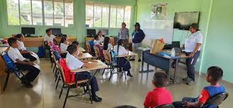

Cuidado del Planeta
Cuidar el planeta es responsabilidad de todos. Acciones simples como reciclar, ahorrar agua y plantar árboles marcan la diferencia. Educar a otros sobre la importancia del medio ambiente también es una forma de proteger nuestro hogar común.
|
CHANCAY APUESTA POR EL CUIDADO DEL PLANETA La Municipalidad Distrital de Chancay motiva a los vecinos a adoptar hábitos sostenibles como ahorrar agua, reciclar, reducir plásticos y mantener limpios los espacios públicos. Señalan que el cuidado del planeta no es una moda, sino una responsabilidad permanente que garantiza un futuro saludable para las próximas generaciones. |


| CONCIENCIA Y PARTICIPACIÓN | DESCRIPCIÓN | HECER CLIC EN LA IMAGEN |
|---|---|---|
| Talleres educativos | Charlas y actividades en colegios sobre cuidado del medio ambiente. |  |
| Redes sociales | Difusión de información y consejos para proteger el planeta. | |
| Eventos comunitarios | Ferias y actividades para promover la responsabilidad ambiental. |